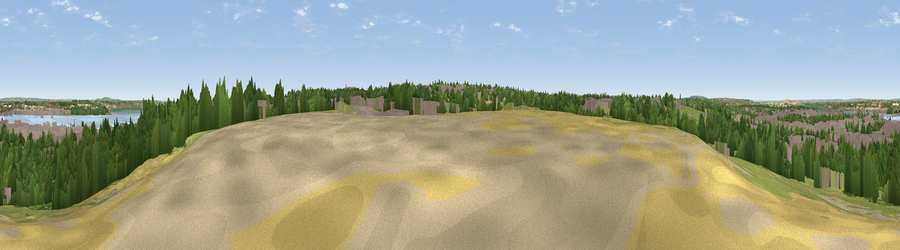

Viewpoint near Worcester Park Estate
#34032 in England · top 22% of its area beats it · near Worcester Park Estate · access?Where it is
The exact computed spot (TQ 57125 74625). Click the marker for map links.
Public access: no public right of way or access land is recorded at this exact spot — it may be on private land. Computed from Natural England's CRoW access layer and OpenStreetMap rights of way — not the legal definitive map. Always verify locally.
The view, rendered

A 360° render of this exact spot computed from the terrain model, tree cover and land cover — summer colours, afternoon light, calibrated against photographs of famous viewpoints. Real trees, hedges and buildings will differ in detail.
The panorama
Grey silhouette: terrain skyline in each direction (720 bearings, Earth curvature and refraction included). Dashed green: skyline with trees (+15 m) and buildings (+8 m) as obstacles. Blue strip: how far the ground is visible on each bearing.
Where the view opens
Wedge length = distance to the farthest visible ground on that bearing (vegetation-aware). Rings at 10, 25 and 50 km.
What fills the view
42% built-up · 29% woodland · 15% grassland · 11% water · 3% cropland ·
Angular shares of the visible panorama (visual magnitude), not map area. Landscape diversity 0.60 (0–1 Shannon).
Key numbers
More beautiful places nearby
The staircase of upgrades: each row has a higher view potential than everything closer. Driving times are estimates from straight-line distance, calibrated against real road routing — check an actual route before setting out.
| Place | Direction | Drive | Score |
|---|---|---|---|
| Viewpoint near Ebbsfleet Valley | SE · 3 km | ~8 min | 41.1 |
| Windmill Hill | ESE · 8 km | ~16 min | 46.7 |
| Viewpoint near Shorne | ESE · 13 km | ~24 min | 52.8 |
| Viewpoint near Wrotham | S · 15 km | ~27 min | 53.6 |
| Viewpoint near Vigo Village | SSE · 15 km | ~27 min | 60.7 |
| Viewpoint near Birling | SE · 16 km | ~28 min | 65.1 |
| Viewpoint near Shipbourne | S · 21 km | ~36 min | 66.2 |
| Viewpoint near Lower Kingswood | WSW · 40 km | ~60 min | 67.7 |
51.44882, 0.25978 · source: screening · position refined by local search. Computed location — check access rights before visiting.